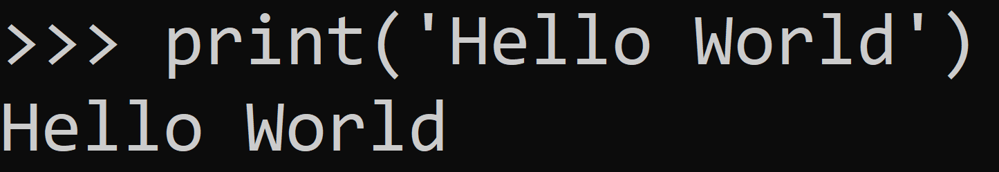

Jelikož počítače komunikují v binární(dvojkové) soustavě, je pro normálního člověka nemožné říci něco počítači pouze pomocí jedniček a nul. Proto byly vytvořeny programovací jazyky. Ty nám umožnují komunikovat s počítačem pomocí jednoduchých instrukcí, které my zadáme.
Tyto instrukce jsou poté přeneseny do takzvaného strojového kódu. To jsou naše jedničky a nuly.

Protože na počítači děláme spoustu věcí, existují také odlišné programovací jazyky, které dělají jiné věci. Můžeme je rozdělit na dvě velké kategorie. To jsou Low-Level a High-Level.
Low-Level: Tyto programovací jazyky mají menší počet instrukcí v sadě. Většinou jsou tyto jazyky svojí jednoduchostí lépe čitelné strojem, tudíž program, který v nich děláme je velice rychlý, ale není tak dobře čitelný lidským okem a hlavně mozkem.
Teď si povíme něco o jednom Low-Level jazyku. Nejstarším a v dnešní době hodně používaným jazykem je Assembly. Tento jazyk slouží pro přímé komunikování s počítačovým hardwarem. Takže v něm píšete, jaké napětí má mít tato součástka, jaký proud jde tudy a podobné jednoduché instrukce.
Tento kód v Assembly slouží k vypsání "Hello World!":
High-Level: Teď si pojďme říct, co je to High-Level a jak je spojený s Low-Levelem. Už jenom z názvu těchto odborných termínů nám dojde, že jsou na sobě nějak napojený. A je tomu tak. High-Level je vlastně opak Low-Levelu. Pro počítač je hůře čitelný, protože už má celkem dost sad instrukcí, které může využívat. To ho děla pomalejší, ale pro člověka je mnohem lépe čitelný než přemísťování jednotlivých napětí po základní desce.
Skvělý příklad je Python. Když ho čtete, tak si občas můžete přijít, že čtete nějakou pasáž z knížky. Python vyplývá z anglického jazyka, tudíž pokud umíte anglicky, tak nějakým částem kódu budete rozumět, i když jste nikdy před tím neprogramovali. Díky své skvělé čitelnosti je o hodně pomalejší než třeba Assembly. Když říkám pomalejší, tak tím myslím pár sekund při větších projektech. Rozhodně nebudete čekat o hodinu déle, když program napíšete v Pythonu, a ne v Assembly.
Napsání "Hello World!" v Pythonu:
Dále bych si vysvětlil pojem tagovací jazyky, protože si tento pojem hodně lidí plete právě z programovacím jazykem. Příklad tagovacích jazyků jsou jazyky, které se používají pro tvorbu webových stránek. Ze jména HTML a CSS. Programovací jazyk musí mít logiku v sobě. To tyto jazyky nemají. Zde jenom označujete, jaký komponent má být kde a jakou má mít barvu a velikost. V HTML třeba nemůžete udělat kalkulačku. A pokud si říkáte, že jste byli na nějakých webech, kde mají kalkulačku, tak to nebylo HTML, ale ve většině případů to bude JavaScript. Ten už v sobě má logiku, tudíž může dělat věci, které jsou k tomu potřeba.
Otázka z tohoto levelu:
Jaký programovací jazyk z uvedených je považován za High-Level?